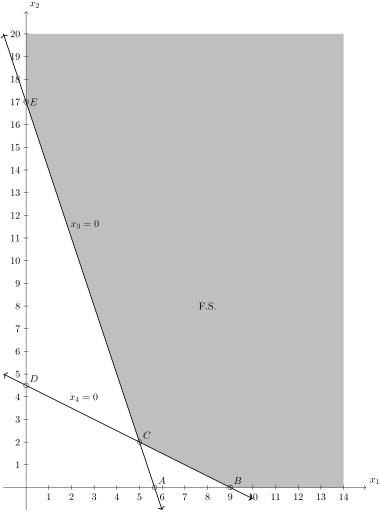

Section 3.3 Simplex Method for Infeasible Tableaus
Consider Problem Problem 2.1.2, in which coffee is shipped from warehouses to retail outlets. The problem was set up as an LOP inProblem 2.1.4and we can use the techniques from the previous section to write this as the following tableau.
First, as discuss in ???, we need to write this problem in standard form, which means switching two of the inequalites by negating them. Also, the objective needs to be written as a maximum. The LOP in standard maximum form is
\begin{equation}
\begin{aligned}\text{Minimize} \amp \amp
z \amp = -2.5 x_1 - 3 x_2 - 4 x_3 - 2 x_4, \\
\text{subject to} \amp \amp -x_2 - x_3 \amp \leq -400.\\
\amp \amp -x_1 - x_4 \amp \leq -350, \\
\amp \amp x_1 + x_2 \amp \leq 700, \\
\amp \amp x_3 + x_4 \amp \leq 500, \\
\amp \amp x_1, x_2, x_3, x_4 \amp \geq 0.
\end{aligned}\tag{3.3.1}
\end{equation}
And the next step is to write the LOP in tableau form,
\begin{equation}
\left[\begin{array}{rrrr|rrrrr|r}
0 \amp -1 \amp -1 \amp 0 \amp 1 \amp 0 \amp 0 \amp 0 \amp 0 \amp -400\\
-1 \amp 0 \amp 0 \amp -1 \amp 0 \amp 1 \amp 0 \amp 0 \amp 0 \amp -350\\
1 \amp 1 \amp 0 \amp 0 \amp 0 \amp 0 \amp 1 \amp 0 \amp 0 \amp 700\\
0 \amp 0 \amp 1 \amp 1 \amp 0 \amp 0 \amp 0 \amp 1 \amp 0 \amp 500\\ \hline
5/2 \amp 3 \amp 4 \amp 2 \amp 0 \amp 0 \amp 0 \amp 0 \amp 1 \amp 0\\
\end{array} \right]\tag{3.3.2}
\end{equation}
Typically, we look at the objective row to determine if a tableau is optimal and the there are no negatives in this row, so it appears it is optimal. However, if we look at the basic solution of
\begin{equation*}
\boldsymbol{x} = \left[ \begin{array} {rrrr|rrrrr}
-400 \amp -350 \amp 700 \amp 500 \amp 0 \amp 0 \amp 0 \amp 0
\end{array} \right]^{\intercal}
\end{equation*}
and note that this is an infeasible basic solution. Before solvnig this problem, let’s use a smaller problem to develop the simplex method for this situation.
Subsection 3.3.1 Infeasible Tableaus
Let’s consider the following LOP:
\begin{equation*}
\begin{aligned}
\text{Minimize} \amp \amp z \amp = 3x_1 + 2x_2 \\
\text{Subject to}\amp \amp 3x_1 + x_2 \amp \geq 17 \\
\amp \amp x_1 + 2x_2 \amp \geq 9 \\
\amp \amp x_1, x_2 \amp \geq 0
\end{aligned}
\end{equation*}
And this can be written in standard form as
\begin{equation*}
\begin{aligned}
\text{Maximize} \amp \amp z \amp = -3x_1 - 2x_2 \\
\text{Subject to}\amp \amp - 3x_1 - x_2 \amp \leq -17 \\
\amp \amp -x_1 - 2x_2 \amp \geq -9 \\
\amp \amp x_1, x_2 \amp \geq 0
\end{aligned}
\end{equation*}
A plot of this feasible set is:

If we introduce slack variables then in Dictionary form this is
\begin{equation}
\begin{aligned}
\text{Maximize} \amp\amp z \amp = -3x_1 -2 x_2 \\
\text{subject to}\amp \amp x_3 \amp = -17 + 4x_1 + x_2 \\
\amp \amp x_4 \amp = -9 + x_1 + 2x_2 \\
\amp \amp x_1, x_2, x_3, x_4 \amp \geq 0.
\end{aligned}\tag{3.3.3}
\end{equation}
As we saw in (3.3.1) and (3.3.2), that this tableau is infeasible. That is the basic solution is not feasible which makes sense because when the basic variables are the original variables, the current basic solution is at the origin, which is not in the feasible set.
As in the Phase II simplex method, we can perform a pivot. The dictionary in (3.3.3) shows that the basis is \(\beta = \{1,2\}\) and parameters \(\pi = \{3,4\}.\) We will remove \(x_1\) and \(x_2\) from the basis and thus have two choices to bring in either \(x_3\) or \(x_4\text{.}\) There are four cases here. Let’s see what happens with each.
- \(3 \mapsto 1\)
-
Let’s try by bringing \(x_1\) out of the basis. If we solve the 2nd equation in (3.3.3) for \(x_1\) (or actually \(3x_1\)) we get\begin{equation*} 3x_1 = 17 + x_3 - x_2 \end{equation*}and then substituting this into the other equations (and multiplying through by a 4) gives the new dictionary\begin{equation} \begin{aligned} \text{Maximize} \amp\amp 3z \amp = -51 -3x_2 -3x_3 \\ \text{subject to}\amp \amp 3x_1 \amp = 17 -x_2 + x_3 \\ \amp \amp 3x_4 \amp = -10 + 5x_2 + x_3 \\ \amp \amp x_1, x_2, x_3, x_4 \amp \geq 0. \end{aligned}\tag{3.3.4} \end{equation}Notice that this is still infeasible and because the coefficients of the variables in the objective function were negative, the value of \(z\) has decreased.
- \(4 \mapsto 1\)
-
If instead we can solve the third equation of (3.3.3) for \(x_1\) to get:\begin{equation*} x_1 = 12 - 2x_2 - x_4 \end{equation*}and subsitute this into the other equations of (3.3.3) to get:\begin{equation} \begin{aligned} \text{Maximize} \amp\amp z \amp = -27 +4x_2 -3x_3 \\ \text{subject to}\amp \amp x_3 \amp = 10 -5x_2 + 3x_4 \\ \amp \amp x_1 \amp = 9 -2x_2 + x_4 \\ \amp \amp x_1, x_2, x_3, x_4 \amp \geq 0. \end{aligned}\tag{3.3.5} \end{equation}And notice that this is a feasible solution now.
- \(3 \mapsto 2\)
-
In this case, we solve the 2nd equation in (3.3.3) for \(x_2\) or\begin{equation*} x_2 = 17 - 4x_1 + x_3 \end{equation*}and substitute these into the other two equations to get:\begin{equation} \begin{aligned} \text{Maximize} \amp\amp z \amp = -34 + 3x_1 - 2 x_3 \\ \text{subject to}\amp \amp x_2 \amp = 17 -3x_1 + x_3 \\ \amp \amp x_4 \amp = 25 -5x_1 + 2x_3 \\ \amp \amp x_1, x_2, x_3, x_4 \amp \geq 0. \end{aligned}\tag{3.3.6} \end{equation}Like the \(4 \mapsto 1\) pivot, this is a feasible solution.
- \(4 \mapsto 2\)
-
Lastly, we solve the 3rd equation for \(2x_2\) or\begin{equation*} 2 x_2 = 9 - x_1 + x_4 \end{equation*}and subsitute this into the other equations to get the new dictionary:\begin{equation} \begin{aligned} \text{Maximize} \amp\amp 2z \amp = -18 -4x_1 -2x_4 \\ \text{subject to}\amp \amp 2x_3 \amp = -25 +5x_1 + x_4 \\ \amp \amp 2x_2 \amp = 9 -x_1 + x_4 \\ \amp \amp x_1, x_2, x_3, x_4 \amp \geq 0. \end{aligned}\tag{3.3.7} \end{equation}
We compare what happened here. In the first possible pivot, we brought \(x_3\) into the basis and in the second, we brought \(x_4\) into the basis. In the second possible step, why did we get a feasible solution, whereas we didn’t on the first one.
This can be explained looking at the feasible set in Figure 3.3.1. Again, the initial dictionary has a basic solution of \(x_1=0, x_2=0\text{,}\) which is at the origin. The pivot \(3 \mapsto 1\) shifts the basic solution to the point \(A\) because this is the \(x_3=0\) line. Alternatively, the pivot \(4 \mapsto 1\) shifts the basic solution to point \(B\text{,}\) which is in the feasible set.
So we need to determine from the dictionary (or more likely from the tableau) how to determine which pivot will make it feasible.